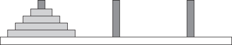
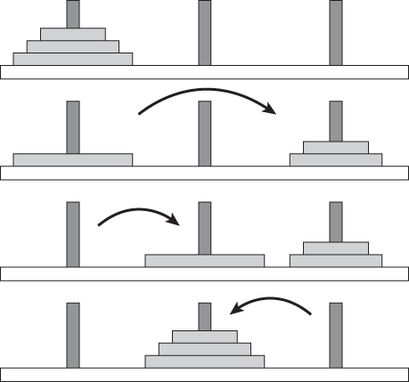
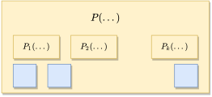
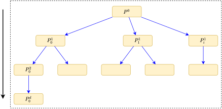

2 Recursion & Divide-and-Conquer
2.1 Recursion
Introduction to Recursion?
Recursion occurs when a function calls itself.
Recursion can be direct (when the function calls itself) or indirect (when the function calls some other function that then calls the first function).
Recursion can also be single (when the function calls itself once) or multiple (when the function calls itself multiple times).
Recursive Algorithm
When designing a recursive algorithm, We must identify
The base case, which is the part of the problem that we can solve without recursion.
The recursive case, or the part of the problem that we use recursion to solve.
Factorial
The factorial of a number n is written n! and pronounced “N factorial.”
The base case: if n=0 then factorial(0)=1
The recursive case: if n>0 then factorial(n)=factorial(n-1)\times n
int factorial(int n) {
if(n==0)
return 1;
else
return n * factorial(n-1);
} Fibonacci Numbers
The Fibonacci numbers are defined by these equations:
f_{0}=1 and f_{1}=1
f_{n}=f_{n-1}+f_{n-2} for n>1
int fibonacci(int n) {
if(n <= 1)
return 1;
else
return fibonacci(n-1) + fibonacci(n-2);
} Tower of Hanoi
The Tower of Hanoi puzzle has three pegs.
One peg holds a stack of disks of different sizes, ordered from smallest to largest.
You cannot place a disk on top of another disk that has a smaller radius.
The goal: move disks from one peg to another without placing a disk on top of a smaller disk.
To move n disks, recursively move the upper n-1 disks to the temporary peg.
Then move the remaining disk to the destination peg.
Finally, move the n-1 upper disks from the temporary peg to the destination peg.

void TowerOfHanoi(int n, char A, char B, char C) {
if(n==1)
printf("Di chuyen dia tren cung tu %d den %d\n", A, C);
else {
TowerOfHanoi(n-1, A, C, B);
printf("Di chuyen dia tren cung tu %d den %d\n", A, C);
TowerOfHanoi(n-1, B, A, C);
}
}2.2 Divide-and-Conquer
Introduction to Divide-and-Conquer
The divide-and-conquer approach employs this same strategy on an instance of a problem.
It divides an instance of a problem into two or more smaller instances.
The smaller instances are usually instances of the original problem, solves them recursively
If solutions to the smaller instances can be obtained readily, the solution to the original instance can be obtained by combining these solutions.
If the smaller instances are still too large to be solved readily, they can be divided into still smaller instances.
The divide-and-conquer can be top-down or bottom-up approach.

Binary Search
Locates a key x in a sorted (nondecreasing order) array \boldsymbol{a}
If x equals the middle item, quit. Otherwise:
Divide the array into two subarrays about half as large. If x is smaller than the middle item, choose the left subarray. If x is larger than the middle item, choose the right subarray.
Conquer (solve) the subarray by determining whether x is in that subarray. Unless the subarray is sufficiently small, use recursion to do this.
Obtain the solution to the array from the solution to the subarray.
int binarySearch(int a[], int l, int r, int x) {
int m = (l+r)/2;
if(l>r) return -1;
if(a[m]==x)
return m;
if(a[m]>x)
return binarySearch(a, l, m-1, x);
if(a[m]<x)
return binarySearch(a, m+1, r, x);
}2.3 Workshop
Quiz
- What is the recursion?
Exercises
- Write a program that solves the Tower of Hanoi puzzle and then displays the moves by graphically drawing disks moving between the pegs